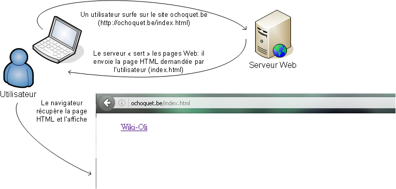
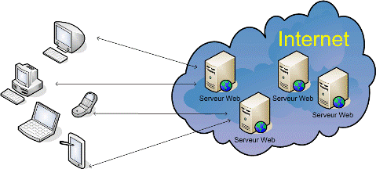
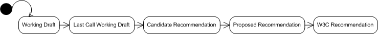

Internet
Introduction
Ce chapitre résume tout ce que vous devez savoir sur Internet
avant d'aborder le HTML et les CSS. Il débute par une présentation
pratique du fonctionnement d'internet suivie d'une présentation des
différents concepts liés à Internet : serveurs Web, HTTP, W3C et
navigateurs Web.
Nous utilisons dans ce cours les termes Internet, Web ou World
Wide Web de manière équivalente.
Fonctionement d'Internet
Exemple

Lorsqu'un utilisateur désire consulter, par exemple, le site
internet de l'école, il encode l'adresse du site http://ochoquet.be/index.html
dans son navigateur (par exemple, Firefox). Le navigateur
demande la page Web introduite au serveur. Dans notre exemple, la
page Web demandée est "index.html".Remarquez que l'adresse http://ochoquet.be/index.html
est strictement équivalente à l'adresse http://ochoquet.be parce que
lorsqu'aucune page particulière n'est renseignée dans l'adresse de
la ressource demandée, le serveur recherche par défaut la page
"index.html" (parfois default.html).
Le serveur Web qui reçoit la demande répond par l'envoi de la
ressource concernée. Dans notre exemple, le serveur Web de l'école
sert la page d'accueil (index.html). Lorsque le navigateur de
l'utilisateur reçoit la ressource, il l'affiche à l'utilisateur. Le
HTML contenu dans la page web indique au navigateur ce qu'il doit
savoir pour afficher le contenu de la page.
Avant d'aborder le sujet principal de ce cours, HTML et les
CSS, nous allons essayer de mieux comprendre notre environnement de
travail en définissant les concepts de serveur Web, W3C, navigateur
Web et enfin de situer le HTML dans cet environnement.
Le serveur Web
Définition

Un serveur HTTP ou démon HTTP ou HTTPd (HTTP daemon) ou
(moins précisément) serveur Web, est un logiciel servant
des requêtes respectant le protocole de communication client-serveur
HTTP, qui a été développé pour le World Wide Web (pas de panique,
nous reparlerons de protocole de communication plus loin).
Le serveur Web est un serveur qui attend en permanence les
requêtes des navigateurs Web. Il doit fonctionner continuellement
sinon le site Internet est hors service. Lorsqu'il reçoit une
requête,il recherche l'élément demandé (page HTML, image, film, ...)
et le renvoie au navigateur.
HTTP

HTTP permet à des PC, des Mac, des PDA et à tous les appareils
connectés de surfer sur Internet. HTTP (HyperText Transfer
Protocol) est un protocole (ensemble de règles permettant d'établir
une communication entre deux entités) qui permet de transférer des
documents hypertexte sur le Web. Ces documents hypertexte sont des
pages HTML, des images, des films ou d'autres types de fichiers liés
à une page Web. HTTP est un protocole à base de requêtes et de
réponses; lorsqu'on introduit une adresse dans le navigateur,
celui-ci demande au serveur la ressource correspondante à la demande
via HTTP.
Il existe deux types de requêtes : get
et post (ces méthodes
seront détaillées dans la partie sur les formulaires). Lorsque le
serveur trouve la page Web recherchée, il la sert au navigateur et
celui-ci l'affiche. Quand la ressource est introuvable, la réponse
du serveur est une erreur 404. Il existe d'autres protocoles
permettant le transfert de fichiers: HTTPS, FTP, FTPS, SSH, ...
W3C
Le World Wide Web Consortium,abrégé
W3C, est un consortium fondé en 1994 pour promouvoir
la compatibilité des technologies du World Wide Web telles que le
HTTP,HTML, XHTML, XML, PNG, SVG, SOAP, ... . En d'autres termes, ce
consortium travaille à la standardisation et l'harmonisation des
technologies Web.
Il réunit les plus grands instituts informatiques du monde
entier; par exemple, le Massachusetts Institute of Technology (MIT).
Le W3C met des recommandations (des "normes") à valeur de
standards industriels. Un document W3C traverse plusieurs étapes
avant de devenir une recommandation:

Les recommandations émises par le W3C sont détaillées sur le site http://w3c.org sur lequel vous
retrouverez toutes les informations sur le HTTP et le HTML, par
exemple. La recommandation
sur le HTTP détaille en long et large le protocole HTTP et définit
entre autres tous les codes d'erreur gérés susceptibles d'être
renvoyés par un serveur Web.
Les codes d'erreur(composés de 3 chiffres) sont classés comme
suit:
- les codes de type 1xx pour les messages d'information;
- les codes de type 2xx pour les messages de réussite;
- les codes de type 3xx pour les messages de redirection;
- les codes de type 4xx pour les messages d'erreur de la part
du client;
- les codes de type 5xx pour les messages d'erreur du
serveur;
Dans la recommandation sur le HTML, l'erreur 404 est définie
par les termes suivants :
404 Not Found
The server has not found anything matching the Request-URI.
No indication is given of whether the condition is temporary or permanent.
The 410 (Gone) status code SHOULD be used if the server knows,
through some internally configurable mechanism, that an old resource is permanently
unavailable and has no forwarding address.
This status code is commonly used when the server does not wish
to reveal exactly why the request has been refused,
or when no other response is applicable.
Le navigateur Web
Définition
Le navigateur Web est le logiciel qui permet de naviguer
sur la toile; il permet de consulter le World Wide Web, càd
l'ensemble des sites Web. Le navigateur se trouve sur le PC de la
personne qui navigue sur le Web. Il permet essentiellement
d'interpréter le langage HTML mais avec l'ajout de modules
d'extension (surnommés plug-in ou helper applications en anglais),
il peut également interpréter des langages complémentaires ou
décoder des formats complémentaires, notamment JavaScript, les
séquences animées Flash, PerlScript, Ajax, etc.
Remarque, le navigateur n'interpréte pas le PHP, langage qui
sera abordé au second semestre. Le PHP est du code interprété côté
serveur et non côté client comme le HTML. Dans ce cas, c'est le
serveur qui effectue le travail.
Techniquement, le navigateur est un client HTTP dans une architecture
client/serveur. Il peut être graphique ou texte.Il existe d'autres
protocoles , par exemple "file" qui est utilisé quand le navigateur
lit des fichiers qui se trouvent sur votre ordinateur. Introduisez file:///c:/ dans la barre de navigation du
navigateur, vous pourrez explorer les dossiers contenus sur votre
disque c.
Exemples
Quelques exemples de navigateurs les plus célèbres et les plus
utilisés:
- Chrome
- Firefox
- Opera
- Lynx
- ...
Le choix du navigateur importe peu puisque normalement tous
interprètent de façon semblable les pages HTML. Evidemment cela
reste de la théorie parce que bien que le HTML soit un standard,
l'affichage diffère parfois entre les navigateurs.
Vous pouvez tester la compatibilité HTML5 de votre navigateur sur le site
HTML5TEST.COM.
Astuce
Pour voir le code source d'une page HTML, il suffit de le
demander au navigateur. Souvent, un simple click droit permet de
choisir "Afficher la source" (IE) ou "Code source de la page"
(Firefox). Essayez sur n'importe quel site, vous accédez à la source
du site Web.
Essayez par exemple de regardez le code HTML5 de ce syllabus !